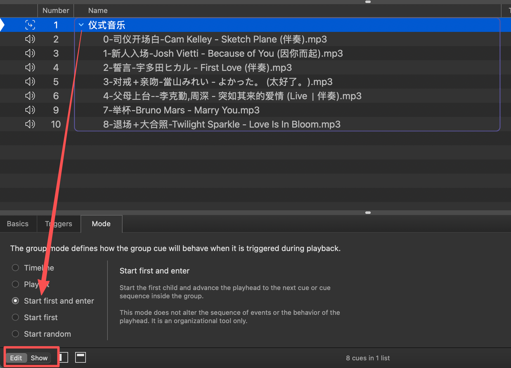
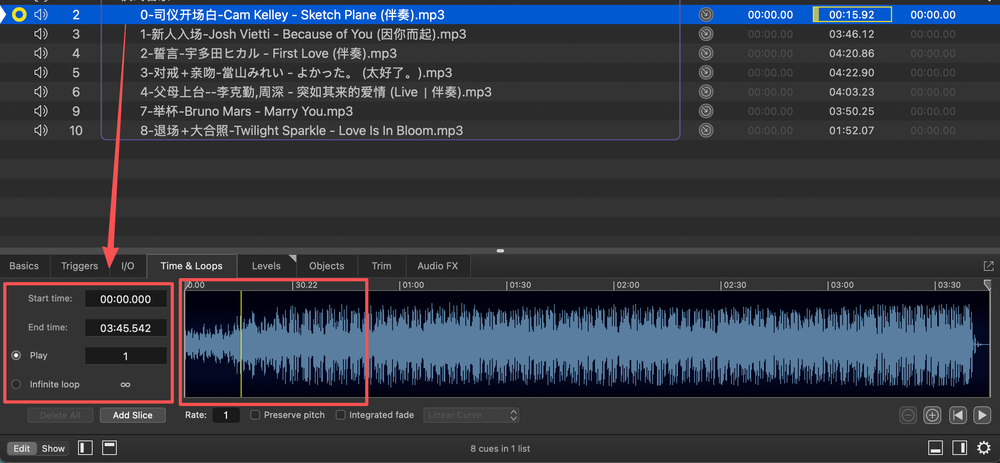
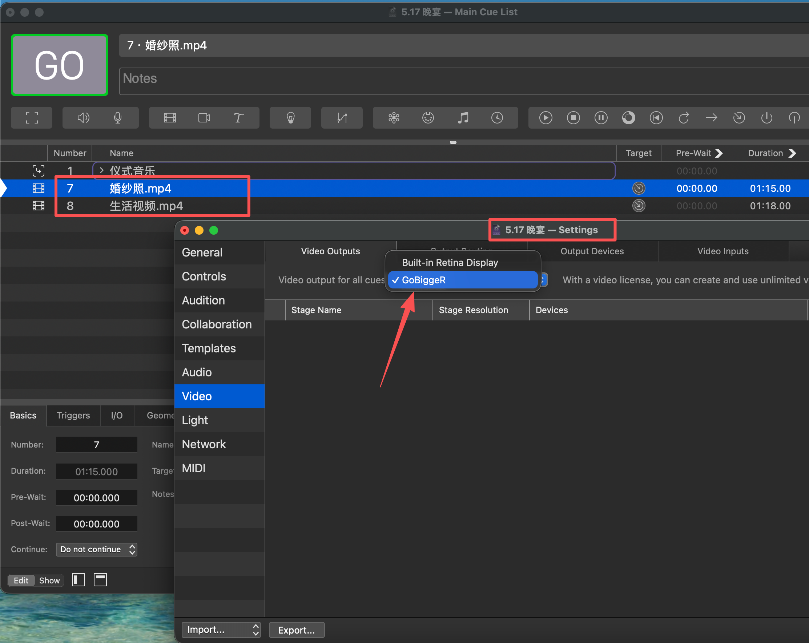

QLab 引导说明
日常操作与音视频配置标准流程
01 QLab 操作方式
所有音频轨道和视频轨道都要在
蓝色光标（即选中状态）
下进行操作。
操作方式说明：
- 空格 播放
- s 清理所有播放轨道
- p 暂停
02 添加仪式音乐文件夹
拖拽音频文件夹进来，选中文件夹，edit功能区选中：【Mode】 - [start first and enter]。
显示
紫色边框
代表操作成功。

图例：images/start.png
03 各音轨设置
1 必要操作：
全部选中所有音轨后，edit功能区打开 【Triggers】 - 右侧勾选 【Fade and stop】
2 音轨播放和时间轴设置：
选中对应音轨，edit功能区打开：
- » 【Time&loop】 - 【Start time】：设置开始播放时间
- » 【Play】：播放次数
- » 【infinite loop】：开始循环播放
右侧波形时间轴：点击后出现黄色线条，可设置播放头，即定位播放

图例：images/audio.png
04 视频设置
- 导入视频文件后，选中视频，快捷键：cmd + , 打开设置面板。
- 选中 【Video】 - vidde Outputs 视频输出选中副屏 【对应副屏名称】 （图例所示为GobiggerR，Retina 是苹果显示器） - 点击 【Done】 保存设置。
- 婚纱照需要设置循环播放，循环播放和音频设置方式相同。生活视频/快剪不需要设置。
- 播放模式下，点击 esc 退出播放。

图例：images/vedio.png